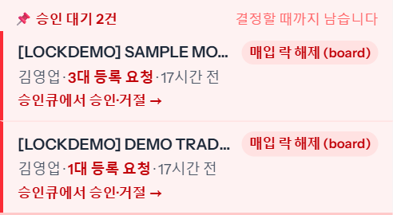
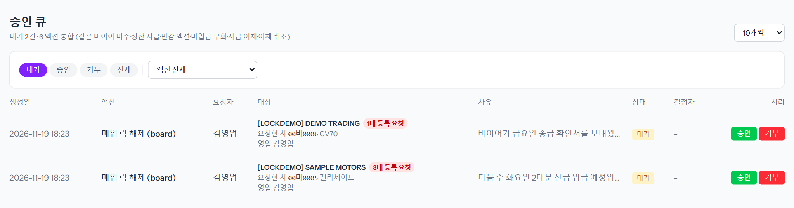
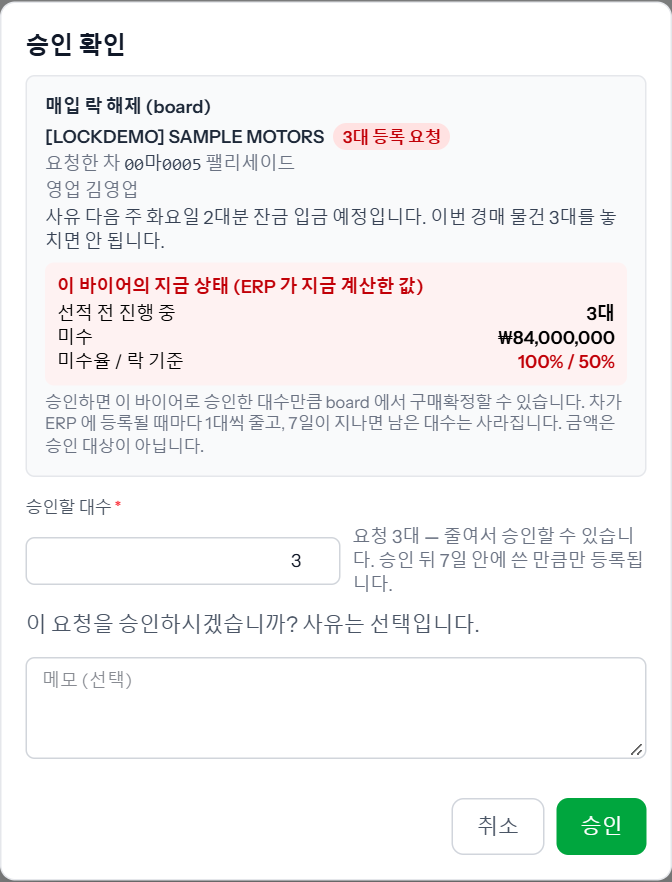

미수가 많아 매입 등록이 잠긴(락) 바이어는 board 에서 구매확정이 막힙니다. 그래도 그 바이어로 차를 더 등록해야 하면 영업이 board 에서 「몇 대를 더 등록하겠다」고 요청하고, 관리 이상이 ERP 승인큐에서 승인합니다. 승인한 대수만큼만 board 에서 구매확정할 수 있습니다. 예시 바이어 [LOCKDEMO] SAMPLE MOTORS.
관리 · 업무관리자 · 최고관리자에게 보입니다. 어느 화면에 있든 뜨고, 새 요청이 오면 한 번 알려 줍니다. [확인]으로 지울 수 없고 승인하거나 거부해야 사라집니다. 벨을 접어도 「승인 N」 표시는 남습니다.

줄을 누르면 승인큐로 갑니다. 사이드바 「승인 큐」로 들어가도 같습니다.
대상 칸에 바이어 이름과 「N대 등록 요청」, 요청하면서 보고 있던 차, 담당 영업이 나옵니다. 금액은 나오지 않습니다 — 판단하는 것은 「이 바이어로 몇 대를 더 등록하게 할 것인가」 하나입니다.

선적 전 진행 중인 차 대수 · 미수 · 미수율과 락 기준을 ERP 가 지금 계산해 보여 줍니다. 「승인할 대수」는 요청 대수가 미리 들어가 있고 줄여서 승인할 수 있습니다(늘릴 수는 없습니다).

영업이 board 에서 그 바이어로 구매확정해 차가 ERP 에 새로 생기면 승인 대수에서 1대가 빠집니다. 승인큐의 그 줄에 「승인 N대 중 M대 사용」이 보입니다. 승인한 대수를 다 쓰거나 승인 뒤 7일이 지나면 남은 대수는 사라지고, 더 필요하면 영업이 다시 요청합니다.